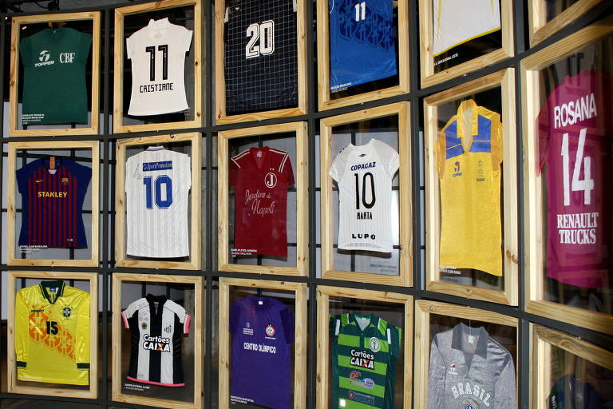
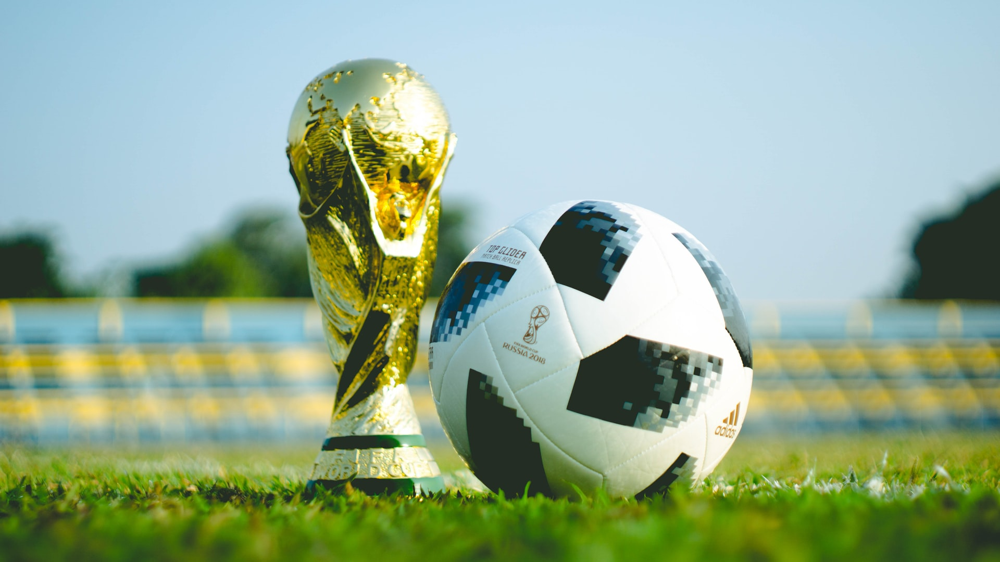

O DiamondMall irá doar todas as camisas da exposição para a Casa de Apoio Aura, que realiza um leilão beneficente para arrecadar fundos. Entre os dias 27 de junho e 15 de julho você pode dar seu lance e levar esta camisa. Todos os valores serão repassados automaticamente para a Casa de Apoio Aura, instituição com 20 anos que ajuda crianças e adolescentes com câncer e seus familiares.
Bicampeã mundial em 1930 e 1950, a celeste olímpica tenta conquistar um titulo que não vê há 68 anos. Para isso, conta com astros que brilham no futebol europeu, como Edinson Cavani, do PSG, e Luis Suárez, do Barcelona. Além disso, depositam as esperanças num conhecido do torcedor mineiro: o meia Arrascaeta, do Cruzeiro, que ganhou a confiança do treinador uruguaio Óscar Tabárez. Outro atleta conhecido do torcedor brasileiro é o goleiro Martín Silva, que joga no Vasco. A nova geração de jogadores uruguaios conta com Lucas Torreira (Sampdoria), Matías Vecino (Internazionale) e Rodrigo Betancur (Juventus). O comando dessa seleção estará mais uma vez a cargo do veterano Óscar Tabárez, chamado pela imprensa uruguaia de “maestro”, que, aos 71 anos, chega à quarta Copa do Mundo. Ele será o técnico mais velho em atividade na Rússia e o que está a mais tempo no cargo. O time base é formado por Muslera; Gimenez, Godin, Maxi Pereira, Caceres e Bentancur; Nandez, Arrascaeta e Vecino; Luis Suarez e Cavani. Após o quarto lugar na África do Sul, os uruguaios foram eliminados pela Colômbia nas oitavas de final, em 2014, e tentarão fazer boa campanha na Rússia.
Exposição Camisas do Mundial
Entre os dias 14 de junho e 13 de julho, o DiamondMall recebe a exposição "Camisas do Mundial", que irá contar com camisas das 32 seleções que estarão no Mundial deste ano. Além de poder ver os mantos de grandes seleções, os visitantes e internautas terão a chance de levar cada uma das camisas.
catar inicia contagem regressiva para a Copa do Mundo
O catar, país que sediará a Copa do Mundo 2022, iniciou no último dia 12, a contagem regressiva de 100 dias para a abertura e início dos jogos, que acontecerão entre 20 de novembro e 18 de dezembro. Ao todo serão 64 jogos que marcarão a disputa pelo título. Os jogos serão realizados em 08 estádios de última geração, e a abertura será no Al Bait. a Copa do Mundo do catar promete ser um grande marco na história do mundial, e de todo país. Começando pelo fato de ser a primeira Copa do Mundo no Oriente Médio, e segundo por que foram muitos investimentos realizados para o mundial, que “entregará um legado que estabelece o padrão para futuros anfitriões de megaeventos” segundo o site Terra.
10 fatos sobre o uruguai
1.O apelido do Uruguai é “paisito”. Os uruguaios se referem carinhosamente assim a sua nação, uma vez que o país possui pouco mais de 176 mil Km². As curtas distâncias facilitam ainda mais conhecer o charmoso país.
2.O Uruguai tem o melhor índice de qualidade de vida de toda a América Larina e também os menores números de corrupção, de acordo com a Transparência Internacional. Vale a pena conhecer de perto como funciona esse exemplo do nosso vizinho, não é mesmo?
3.Um sanduíche é o prato típico preferido dos uruguaios. O chivito, um sanduíche com bife, mussarela, tomate, maionese, azeitonas, bacon, ovos e presunto, servido em um pão com batata frita ao lado é uma das comidas mais populares do país.
4.Uma das melhores vinícolas do mundo fica no Uruguai. Se você curte enoturismo, vai gostar de saber que a Bodega Garzón, um empreendimento bilionário localizado no Uruguai, foi eleita por vários anos, como a melhor vinícola do mundo para se visitar, recebendo o Prêmio World’s Best Vineyards.
5.Os cassinos são liberados no Uruguai. Uma boa opção para aproveitar a vida noturna do país é conhecer os cassinos uruguaios. Muitos funcionam 24h e oferecem ainda grandes shows e cardápios assinados por renomados chefs.
6.O Uruguai tem o carnaval mais longo do mundo. Acredite se quiser, mas esse título não é do Brasil. No Uruguai, o carnaval dura 40 dias de festas, de janeiro a março, com apresentações e desfiles em teatros e palcos improvisados nas ruas. Ah! A maior bateria de carnaval do mundo também fica no Uruguai e é composta por 2500 tambores.
7.O Uruguai é o país que mais consome carne bovina no mundo. Os hermanos adoram um bom churrasco e tem o maior percentual de consumo de carne bovina por habitante do planeta. 59,6% das terras do Uruguai são destinadas à criação de ovinos e bovinos.
8.O país sediou a 1ª Copa do Mundo. Assim como nós brasileiros, os uruguaios são apaixonados por futebol e pela “la celeste”, como chamam a seleção nacional. O Uruguai, que é bi campeão mundial, sediou a primeira partida internacional de futebol em 1902, e também a primeira Copa em 1930.
9.O Uruguai tem o hino nacional mais longo do planeta. Durante as execuções públicas, o hino uruguaio é encurtado, isso porque a versão original tem 105 estrofes e dura aproximadamente 6 minutos.
10.O Uruguai é um país bastante liberal. Além de declarar um estado laico, separando política e religião, o Uruguai tem uma legislação bastante avançada. A maconha é liberada e controlada pelo governo para comércio em farmácias, o aborto é legalizado nas 12 primeiras semanas de gestação, o pais também foi o primeiro da América Latina legalizar a união civil de homossexuais.